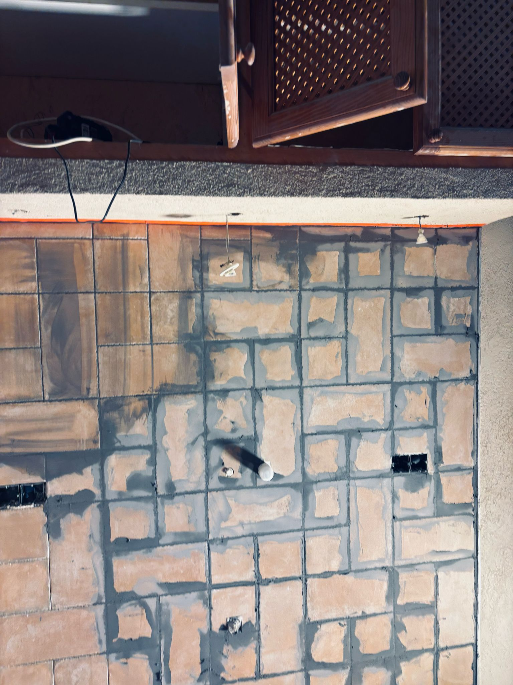
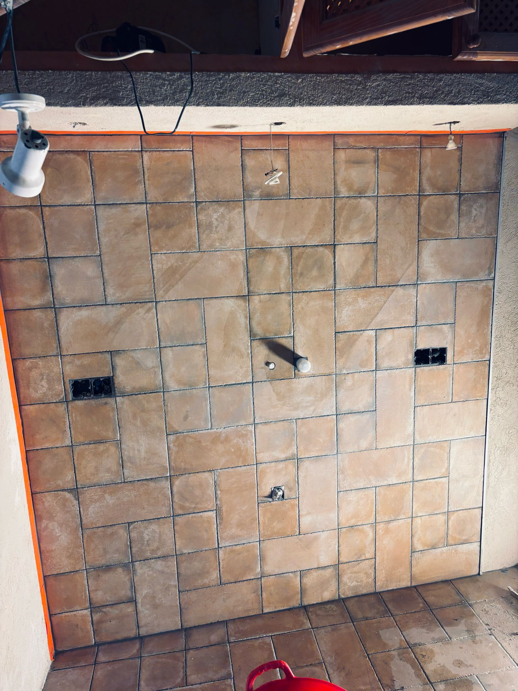
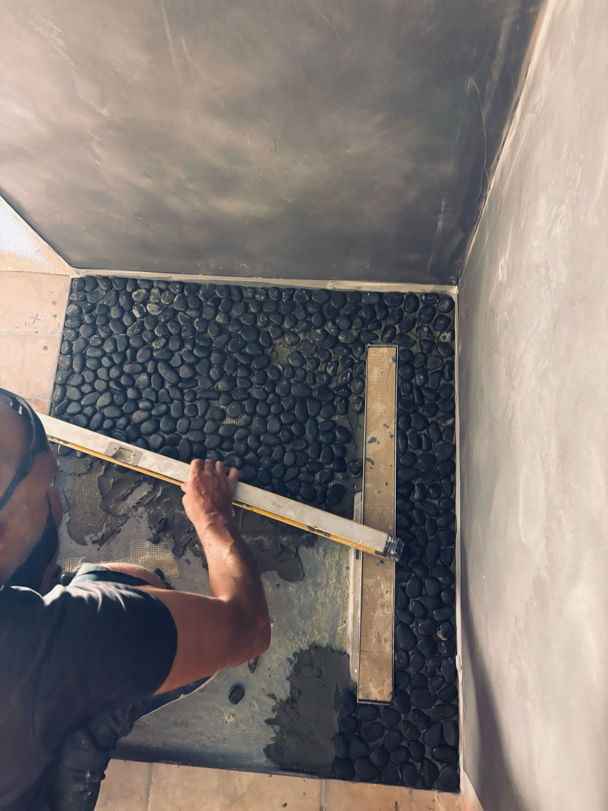
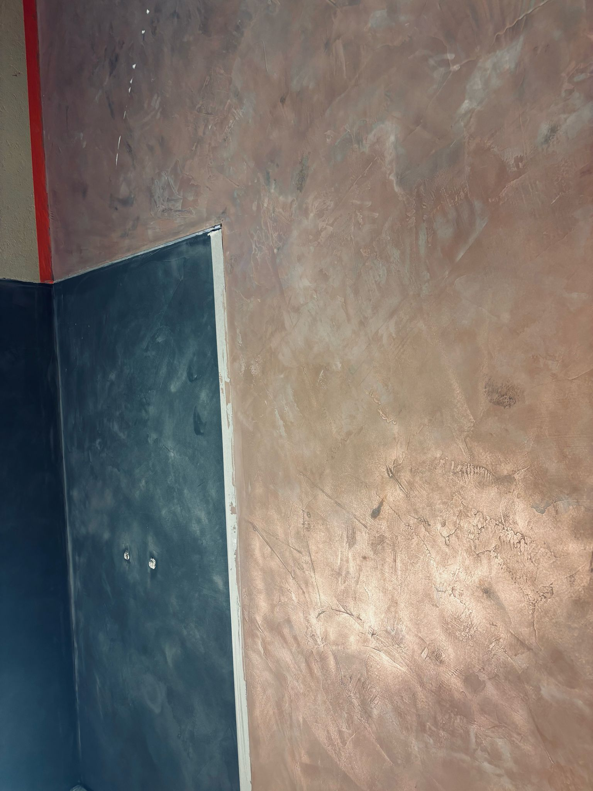
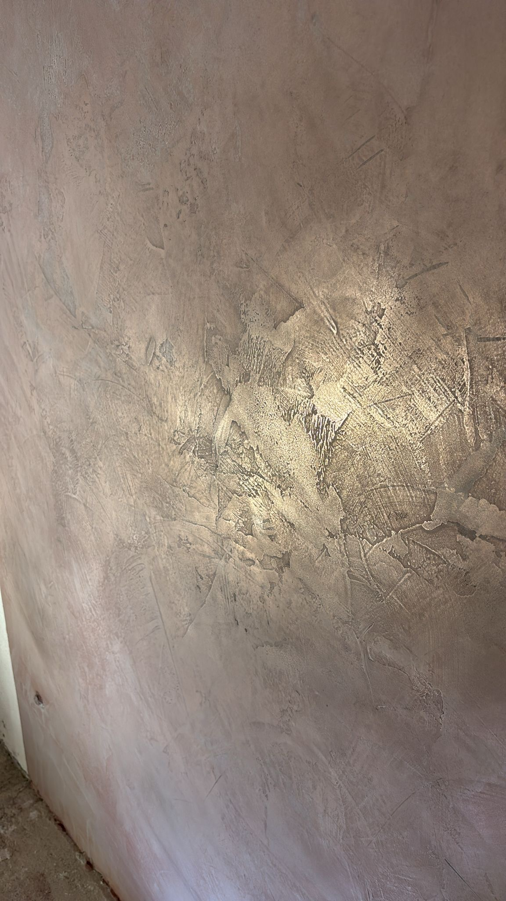
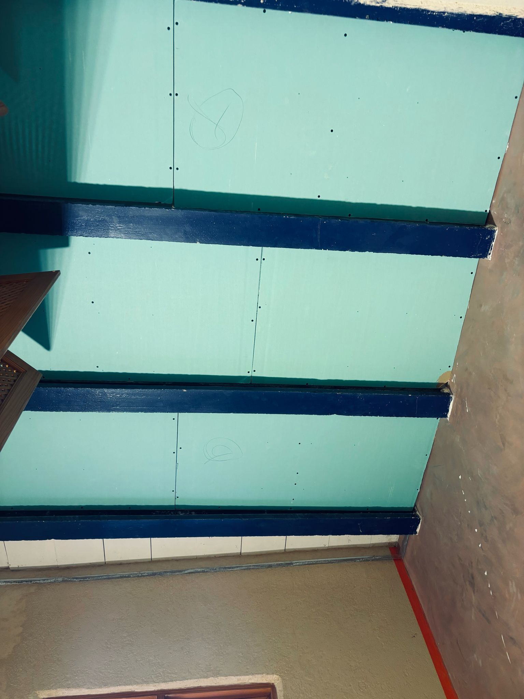
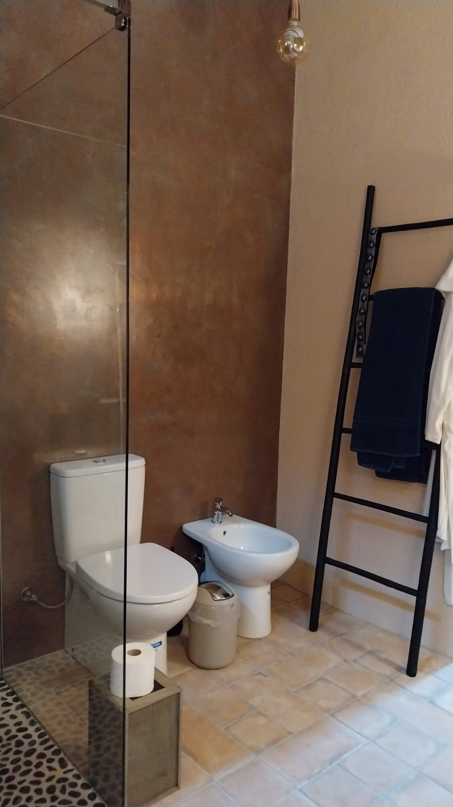
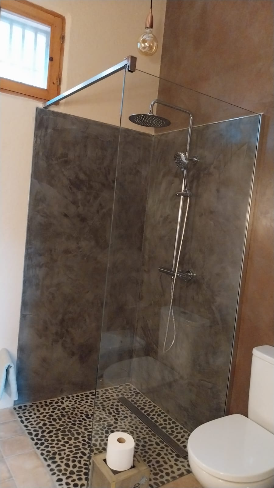
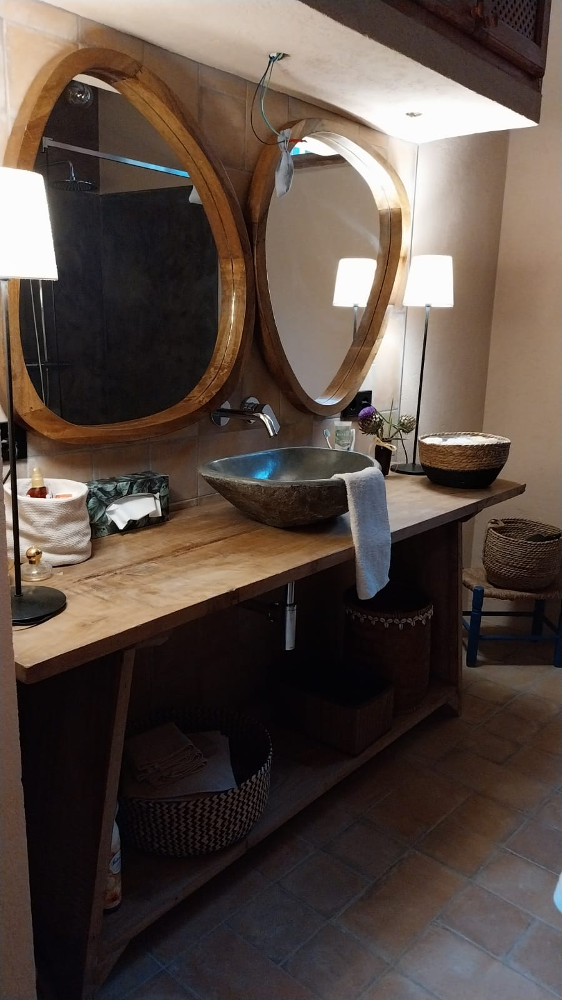

Reforma integral · Ejecución real
Reforma integral
de baño.
Embaldosado · Alicatado · Microcemento · Plato de ducha. Ejecución coordinada desde la preparación de soportes hasta los acabados finales.
← Volver a proyectos
Proceso completo
Distintos acabados, una ejecución continua.
El proyecto combina pavimento embaldosado, revestimiento alicatado, superficies de microcemento y plato de ducha, cuidando encuentros, pendientes, juntas y remates.









Reformas integrales en Mallorca